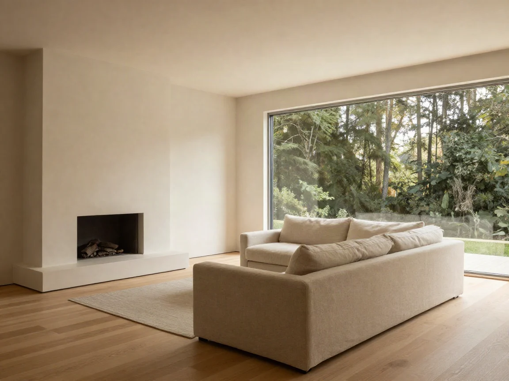
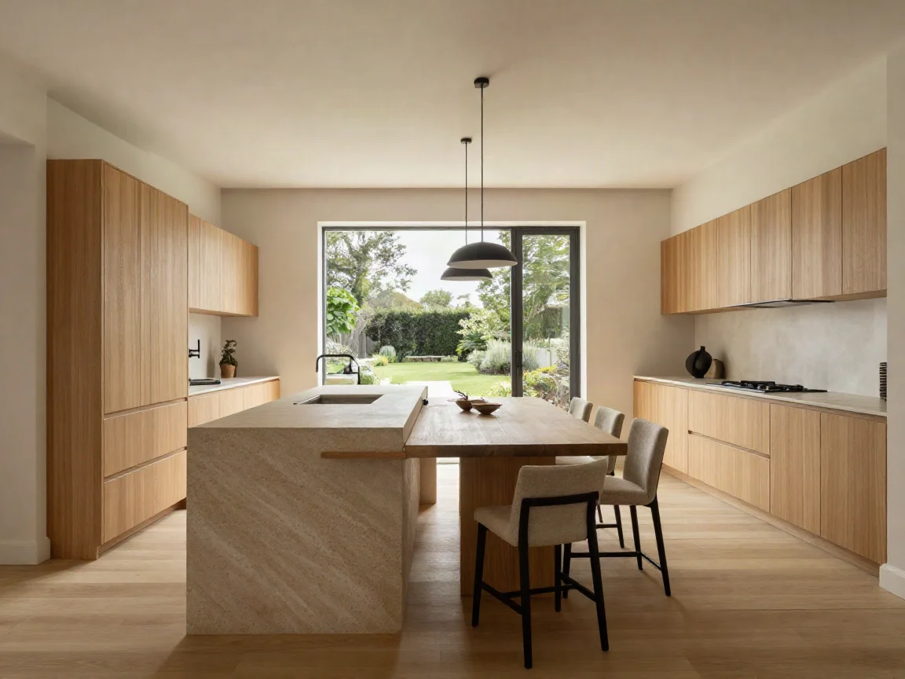

Между чертежом и ключами нет подрядчика
Архитектор, конструктор и цех сидят в одном здании и смотрят на один чертёж. Узел, нарисованный в понедельник, в четверг уже фрезеруют, а не пересогласовывают заново.
Мы беремся за шесть домов в год. Больше — и придётся звать подрядчиков, а вместе с ними вернутся сроки, за которые никто не отвечает.
- 14
- лет практики
- 47
- домов передано
- 9
- человек в студии
- 7
- месяцев до ключей

Построенные дома
Шесть из сорока семи. Площадь по внутреннему контуру, срок — от подписания до передачи ключей.

Материал выбираем так, чтобы он старел красиво
Обожжённая доска не требует покраски. Травертин темнеет от воды и становится глубже. Тик седеет за два сезона и на этом останавливается. Дом должен выглядеть лучше на десятый год, а не хуже.

Что внутри
Дом приезжает с отделкой, светом и мебелью. Выберите комнату и посмотрите, из чего она собрана.


Мебель, свет и техника входят в стоимость дома. Обсудить комплектацию
Девять человек
Дом ведёт один архитектор от первой встречи до передачи ключей. Он же приезжает на сборку и отвечает за неё лично.
 Артём Гурскийглавный архитектор
Артём Гурскийглавный архитектор Павел Дорнконструктор
Павел Дорнконструктор Ника Соболеваруководитель проектов
Ника Соболеваруководитель проектов Лиза Ратмановаинтерьеры
Лиза Ратмановаинтерьеры Марк Ивашовпроизводство
Марк Ивашовпроизводство Женя Крайноваснабжение
Женя Крайноваснабжение
Как строим
Семь месяцев от первой встречи до вечера, когда можно заезжать с вещами.
-
01
Участок и разговор
Приезжаем на участок, смотрим въезд, грунт, соседей и то, куда уходит солнце. Дальше — три часа разговора о том, как вы живёте. Бюджет считаем до подписания, не после.

-
02
Проект
Объём, планировки, узлы, инженерия. Восемь недель и три встречи, на которых можно менять всё. После четвёртой — уже нельзя, и это честнее, чем менять на стройке.

-
03
Производство
Стеновые панели, балки, окна и лестницы делаем в цеху под Выборгом. В цеху сухо и плюс восемнадцать, поэтому дерево ведёт себя предсказуемо, в отличие от стройплощадки в ноябре.
-
04
Сборка и ключи
Коробку собираем за одиннадцать дней, дальше отделка и инженерия. Передаём дом с мебелью, светом и посудомойкой. Заезжать можно в тот же вечер.

Покажите участок — скажем, что на нём встанет
Пришлите кадастровый номер или просто точку на карте. В ответ — разбор участка и вилка бюджета. Бесплатно и без встречи, если встреча пока не нужна.